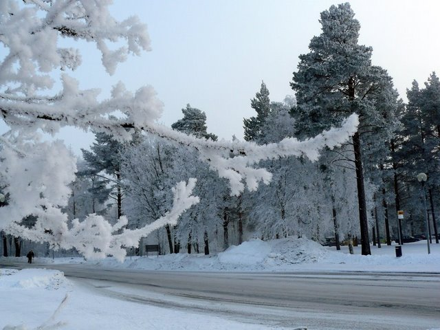

Jak jste si jistě všimli, nemám v poslední době moc náladu psát na blog. Ani nevím proč. Čas by určitě byl, ale tak nějak není ta touha sednout si k počítači a napsat spoustu textu o tom, co jsem pěkného prožil. A tak se stává, že na blogu se nic moc neděje a vy nevíte nic o tom, co tady dělám. A já pomalu mizím z vašich životů… Občas se objeví nové fotky nebo videa, ale to je tak vše ...
Už od párty uběhla docela doba… No chtěl jsem se o ní zmínit,
protože to byla nejlepší párty ze všech. Tak nějak spontánně se
vyvinula moc příjemně a i perro říkal, že to byla lepší párty než
jakákoliv jiná minulý semestr. Těžko okecávat takový zážitek, takže
přidám jen skvělé Arminovo video.
Někoho by mohlo zajímat srovnání české průměrné banky a finské průměrné banky. Dejme tomu, že nebudu srovnávat, ale jen popíšu, jak to funguje u švédské Nordea. Obrázek si udělejte sami. Nechtělo se mi moc popisovat své zážitky z banky jako pohádku, takže jsem to pojal jako systém postřehů a bodů…
Mají jeden typ účtu, pokud jsem to dobře pochopil. Ten si můžete otevřít/zavřít/vést prakticky zdarma. Dostanete kartu Visa Electron. Na zřízení potřebujete pas/občanku a papír ze školy ...
Dnes malé povídání o finských pivech. Pivo zakoupené v supermarketu má zásadně 4,4 % alkoholu, silnější můžete koupit jen v předraženém Alku. Jsou tady hrozně ujetí na 33 cl plechovky a sklenice, které u nás dobrovolně nikdo snad ani neprodává, ani nekupuje. Na jedné straně je to legrační, na straně druhé to vychází dost draho. V hospodě vám nenalijí půllitr, jak je běžné u nás, ale velmi často 33 cl, takže i když by se zdálo, že na akcích typu ...
Mentální retardace je podle Wikipedie postižení jedinců, při kterém dochází k zaostávání vývoje rozumových schopností, k odlišnému vývoji některých psychických vlastností a k poruchám v adaptačním chování. Myslím, že Češi zapomněli, že jednou z charakteristik člověka jako živočišného druhu je úžasná schopnost adaptace a sžití se s přírodou.

Čtrnáctého ledna 2006 jsem na svůj tehdejší blog napsal článek s titulkem Proč nechodit v zimě ven?. Myslím, že je ještě celkem mírný na to, jakou rétorikou jsem se prezentoval později. Tento ...